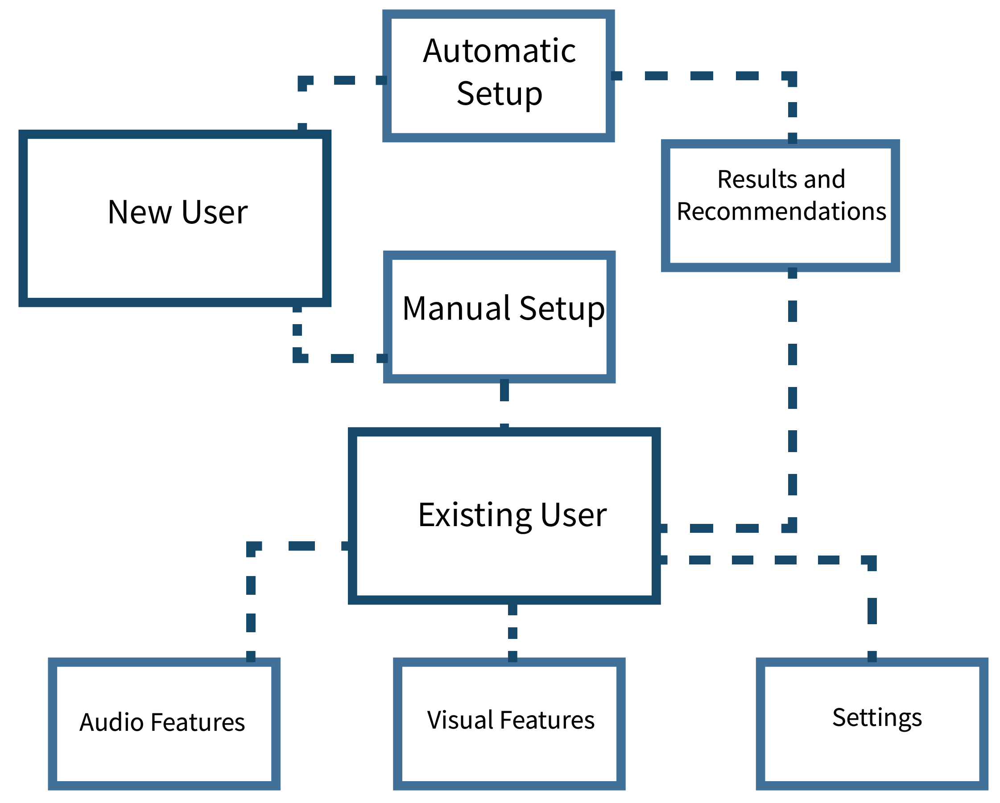
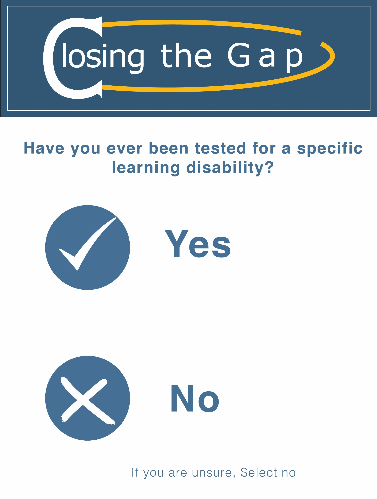

Intro
Close the Gap is browser extension which helps users navigate the internet, making slight changes for the user, that allow them to work more efficiently online. Dyslexic is the most common learning disability affecting roughly 1 in 5 people. It is not limited to literacy. It can also affect motor skills, organisation, focus, time and processing. Closing the Gap's focus is to provide a personlised online assistant that can help users adapt and succeed in an online environment.
Target Audience
My target audience is users with learning disabilities, not only with Dyslexia but Dysgraphia, Dyscalculia and other non-specific learning disabilities. As part of the browser extension being personalized, it recognizes how serve or mild the learning condition is and tailors this experience to the user effectively. Users also don’t have to have a learning disability to use the browser extension effectively. All options will still be available as there is no minimum to how a learning difference effects a user’s life.
Existing Products

One of the most well-known online proofreading software products is Grammarly. Grammarly offers an online editor with a browser extension that is interchangable through different apps, both in an online and separate in app environment like Slack, Excel, Skype etc. through a personal account. As a dyslexic student, I find this software helpful but it is based on algorithms. and presents a writing style not reflective of the user. Grammarly is also offers a premium paid service which allows for more originality in writing styles. Also Grammarly is not targeted specifically to Dyslexic users.
Other existing products that are more specific to Dyslexia include online fonts such as Opendyslexic font which weights the bottom of the font to help the reader distinguish tricky letters such as U and N, M and W, F and T etc. OpenDyslexic is described as a reading aid, and not a general fix for Dyslexia as there are many types and levels of dyslexia. It is important to keep in mind that learning disabilities are not a one size fits all, and creating an interface that is more personal is crucial.
Branding
Fonts
In my branding research, I considered colours and fonts which would enhance the user’s experience with Closing the Gap. A Spanish study looked into which fonts were best, including Helvetica, Courier, Arial and Verdana. All of these fonts are in the Sans Serif style which again make it easy for the reader to be able to distinguish different letters which some dyslexic users struggle with. It is important to give the user different options to turn on and off as they need because there is no ‘one size fits all’ need for a dyslexic user.
I will also consider the use of underline , UPPERCASE and Italics as in the study this was also found to impair reading ability for dyslexics. The objective of Closing the Gap is to work alongside the user, not to overpower and computerise their thinking
Logo
Full Logo
Icon
Colour
User Flow

Interface
New user

Existing user

Glimpse